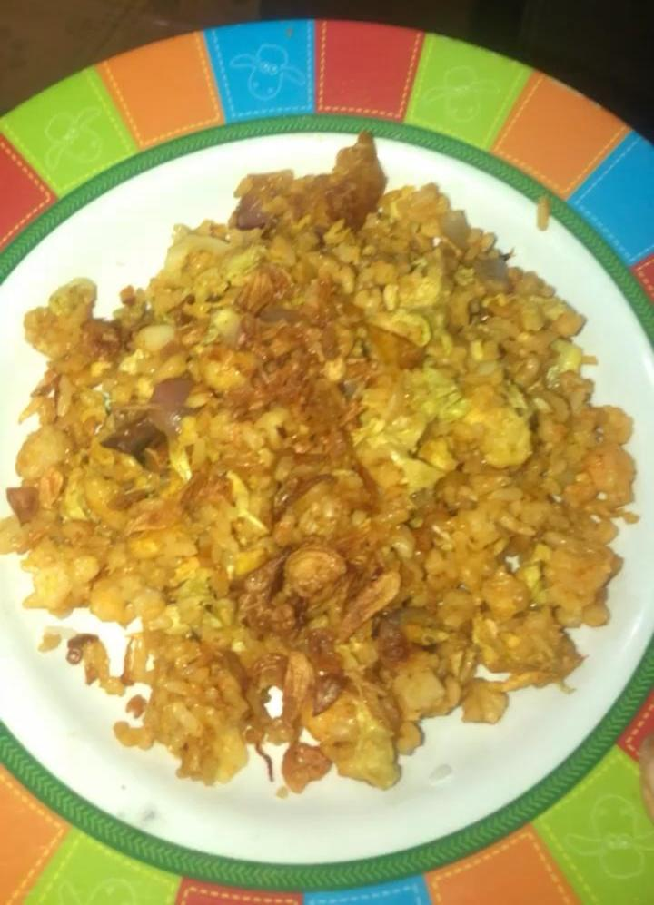

Ingredients
- Rice
- Eggs
- Salt
- Oil
- Mushroom Broth
- Cabbage
- Garlic
- Red Onion
- Fried Rice Seasoning
Tools
Steps
- Fry the rice by lightly browning in a pan
- Stir-fry the garlic,red onion,cabbage until tender
- Make a large well in the center of the pan with the rice
- Pour in the whisked eggs and scramble until small curds form
- Sauce is optional but adds a savory flavor to the rice
- Add salt and mushroom broth in a pan
- Add 1 sachet of fried rice seasoning
- Stir fried rice until ripe